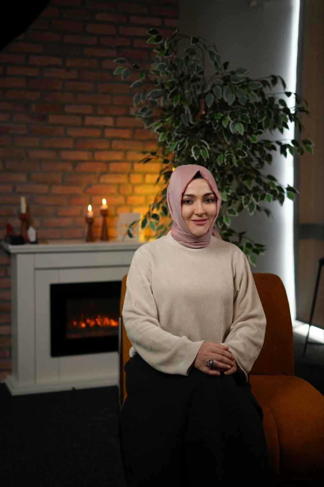

Katman katman derinleşen bir yol.
ThetaHealing®'de modüller birbirinin üzerine kurulur; JAAS ve Spiritüel Dowsing bağımsız seminerlerdir. Tümü online, canlı ve uygulamalıdır.
Basic DNA
Bilinçaltındaki kalıpları bulmayı ve tespit etmeyi öğrendiğin temel seminer.
Advanced DNA
Basic DNA'nın ardından tekniği derinleştirip uygulamada deneyimlediğin seminer.

Derin Kazı
Kalıpların kökenine inmek için "kazma" tekniğine odaklanan ileri seminer.
Sen ve Yaradan
İç rehberliğini netleştirip Yaradan'ın sesini diğer seslerden ayırt etmeyi öğrendiğin ileri seminer.
ThetaHealing® 4 Modül
Basic DNA, Advanced DNA, Derin Kazı ve Sen ve Yaradan modüllerinin dördü birlikte.
JAAS Uygulayıcılık
Jean Adrienne Miller'ın geliştirdiği, 144 dosyadan oluşan arınma sistemi.

Spiritüel Dowsing
Sarkaç ile arınma: seans algoritması da içeren bütünlüklü bir sistem.

Bireysel Danışmanlık
ThetaHealing® ve JAAS ile kendi konunuz üzerine, 60 dakikalık online seans.
Takvim
Güncellemeyi başlat.
Formu doldur, seninle iletişime geçelim. Burada yalnızca iletişim bilgisi istiyoruz: sağlık ya da özel bilgi sormuyoruz.
💬Hızlı soru mu? WhatsApp'tan yaz: tarih ve ücret bilgisi için.